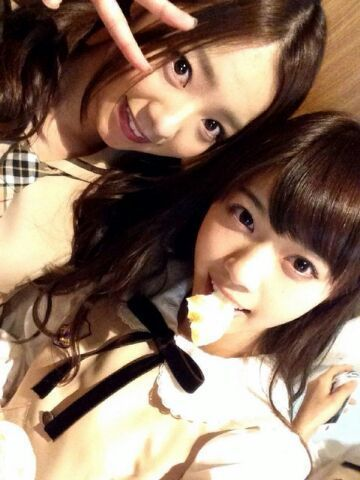
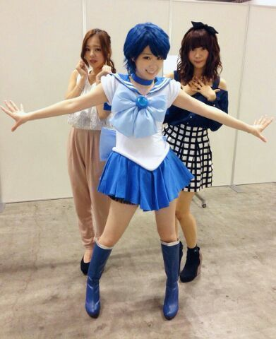

| 2014/05 25 Sun | ダンス選抜 、 なな せまるが産まれたよ。 ろってぃ - |
こんばんわ〜))) 今日も１日お疲れ様でぇ〜す
 ..*
..*
ろってぃ-だよ〜
皆 今日は何していたのかな？？
私は プリンシパルのお稽古で朝から晩まで頑張っていましたよ..* 最近 プリンシパルネタしかなくてごめんね.笑
っとここで、、、一昨日に、雑誌『 Top Yell 』さんの取材をうけてきました。 ちなみに、発売は【" 6 / 6 "】とのことです !!!!
内容はパフォーマンス等について、、、
乃木坂46のダンス選抜３人とゆうことで
私,川村まひろ // そして中元日芽香 // そして中田花奈を選んで頂きました !
是非 チェックしてみてくださいね
ダンスは誰よりも好きですけれども、アイドルのダンスの話となったら やっぱカナが詳しすぎて、私とひめかは『ほほ〜う。』とゆう感じで聞いたりもしてました。笑
てへ
かな & ろってぃ-
そしてそしてそして、我がとっても大好きな人間。
西野ななせまるが 二十歳のお誕生日をむかえました

はっぴばーすでーとぅーゆー ×２
はっぴばーすでーでぃーや ななせーーー
はっぴばーすでーとぅーゆー。

ななせとは 地元が近く、大阪とゆうことで
いつも仲良しこよしとゆうやつです.
一緒に居て落ち着く存在なので、楽屋やレッスンの時も ななせと一緒に要ると楽しいです..*
はい。ななせまるLOVEだよ。
これからも よろしくお願いします //
ではではでは、 明日も頑張りましょうね(*/´▽`)/
いやん
 のし。
のし。

コメント(189)
2014/05/25 22:00